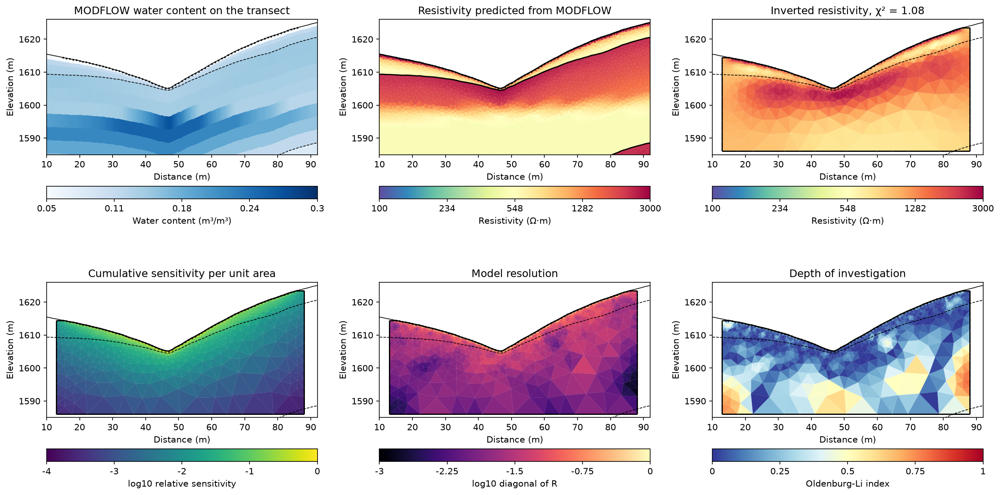

Note
Go to the end to download the full example code.
Ex. Where an ERT Survey Sees MODFLOW Water Content#
Check what an ERT survey can resolve before reading water content out of its
inversion. The hydrological state is the water content of the Treeline catchment
MODFLOW model shipped under examples/data, on the hillslope transect of
Ex_ERT_workflow. hydro_to_ert turns it into the 72-electrode Wenner survey
it predicts, ERTInversion inverts that survey, and three diagnostics of the
inversion follow: cumulative sensitivity (how strongly each cell affects the
data), model resolution (how much of each cell’s value the regularized
inversion recovers) and the depth-of-investigation index of Oldenburg and Li
(1999) (where the result follows the reference model rather than the data).
The diagnostics are then summarized for each hydrostratigraphic unit of the
MODFLOW model.
Requires PyHydroGeophysX with pyGIMLi. Run time: about 2.5 minutes.
import os
import numpy as np
import matplotlib.pyplot as plt
import pygimli as pg
try:
current_dir = os.path.dirname(os.path.abspath(__file__))
except NameError:
current_dir = os.getcwd()
if os.path.isdir(os.path.join(current_dir, "examples")):
current_dir = os.path.join(current_dir, "examples")
from PyHydroGeophysX.analysis import (
compute_cumulative_sensitivity, compute_depth_of_investigation, compute_resolution_matrix,
)
from PyHydroGeophysX.core.interpolation import ProfileInterpolator, create_surface_lines
from PyHydroGeophysX.core.mesh_utils import MeshCreator
from PyHydroGeophysX.forward.ert_forward import ertforandjac2
from PyHydroGeophysX.Hydro_modular import hydro_to_ert
from PyHydroGeophysX.inversion.ert_inversion import ERTInversion
from PyHydroGeophysX.inversion.ert_mesh import build_inversion_mesh
Load the MODFLOW state and cut the transect#
The arrays are MODFLOW output on the model’s 1 m grid: water content (time, layer, row, column), porosity and the layer bottoms. Layers 1-4 are regolith, 5-12 fractured bedrock and 13-14 fresh bedrock. The water content is the snapshot Ex_ERT_workflow uses.
data_dir = os.path.join(current_dir, "data")
top = np.loadtxt(os.path.join(data_dir, "top.txt"))
bottoms = np.load(os.path.join(data_dir, "bot.npy"))
porosity = np.load(os.path.join(data_dir, "Porosity.npy"))
water_content = np.asarray(np.load(os.path.join(data_dir, "Watercontent.npy"), mmap_mode="r")[5])
interpolator = ProfileInterpolator(point1=[115, 70], point2=[95, 180], surface_data=top,
origin_x=569156.0, origin_y=4842444.0)
structure = interpolator.interpolate_layer_data([top] + bottoms.tolist())
layer_idx = [0, 4, 12]
surface, regolith_base, fractured_base = create_surface_lines(
interpolator.L_profile, structure, *layer_idx)
mesh, _ = MeshCreator(quality=32).create_from_layers(
surface=surface, layers=[regolith_base, fractured_base],
bottom_elevation=fractured_base[:, 1].min() - 10.)
Predict the survey from the MODFLOW state#
hydro_to_ert carries the state through Waxman-Smits petrophysics, one
parameter set per unit, then forward models 72 electrodes at 1 m spacing in a
Wenner array and adds 5% noise.
units = [0, 3, 2] # mesh markers of regolith, fractured bedrock and fresh bedrock
unit_names = {0: "Regolith", 3: "Fractured bedrock", 2: "Fresh bedrock"}
petrophysics = {"rho_sat": [100., 500., 2400.], "n": [2.2, 1.8, 2.5], "sigma_s": [1 / 500, 0., 0.]}
survey, true_resistivity = hydro_to_ert(
water_content=water_content, porosity=porosity, mesh=mesh,
profile_interpolator=interpolator, layer_idx=layer_idx, structure=structure,
marker_labels=units, rho_parameters=petrophysics, electrode_spacing=1.,
electrode_start=15., num_electrodes=72, scheme_name="wa", noise_level=.05,
rel_error=.05, seed=2026)
print(f"Predicted survey: {survey.size()} readings")
Invert the predicted survey#
The inversion runs on its own parameter mesh with smoothness regularization (lambda=10), starting from a homogeneous model.
inversion_mesh = build_inversion_mesh(survey, mesh_quality=34)
inversion = ERTInversion(survey, mesh=inversion_mesh, lambda_val=10., max_iterations=10,
verbose=False)
result = inversion.run()
cells = inversion.fwd_operator.paraDomain
print(f"Inversion: {cells.cellCount()} cells, chi2 {result.meta['chi2']:.2f} "
f"after {result.meta['iterations']} iterations")
Sensitivity and resolution of this inversion#
The Jacobian is taken at the recovered model, as log apparent resistivity per log resistivity. Dividing the cumulative sensitivity by cell area removes the growth of the cells with depth. The resolution matrix uses the inversion’s own data weights, smoothness matrix and lambda, so it describes this inversion.
_, J = ertforandjac2(inversion.fwd_operator, np.log(result.final_model), inversion.mesh)
area = np.array([cell.size() for cell in cells.cells()])
sensitivity = compute_cumulative_sensitivity(J) / area
resolution = np.diag(compute_resolution_matrix(
J, inversion.Wdert_diag, inversion.Wm_r.toarray(), inversion.parameters["lambda_val"]))
Depth of investigation#
compute_depth_of_investigation inverts again from two homogeneous
reference models, 0.8 and 1.2 times the recovered median. Smoothness alone
ignores a homogeneous reference, so these two runs add a smallness term that
pulls toward it (reference_weight). Both run to convergence rather than
stopping at the target misfit, so they differ by their reference and not by
where each stopped. The result is rescaled to Oldenburg and Li’s index: 0
where the two runs agree and the data decide, 1 where each follows its own
reference.
doi_inversion = ERTInversion(survey, mesh=inversion_mesh, lambda_val=10., max_iterations=15,
target_chi_squared=0., reference_weight=.3, verbose=False)
doi, models = compute_depth_of_investigation(
doi_inversion, survey, cells, reference_resistivity=float(np.median(result.final_model)))
doi_index = doi / ((1.2 - .8) / (1.2 + .8))
for name, model in models.items():
response = np.log(np.asarray(doi_inversion.fwd_operator.response(pg.Vector(model))))
chi2 = np.mean((doi_inversion.Wdert_diag * (doi_inversion.rhos1.ravel() - response)) ** 2)
print(f"Run from the {name.split('_')[1]} reference: chi2 {chi2:.2f}")
Summarize by hydrostratigraphic unit#
Each inversion cell belongs to the MODFLOW unit its centre lies in. A cell counts as data-controlled where the index is below 0.2; Oldenburg and Li suggest a cut-off between 0.1 and 0.2.
x, z = np.array(cells.cellCenters())[:, :2].T
unit = np.where(z > np.interp(x, *regolith_base.T), 0,
np.where(z > np.interp(x, *fractured_base.T), 3, 2))
print(f"{'Unit':18s}{'Area (m2)':>10s}{'Data-controlled':>17s}{'Median resolution':>19s}")
for marker in units:
sel = unit == marker
if sel.any():
controlled = np.sum(area[sel] * (doi_index[sel] < .2)) / area[sel].sum()
print(f"{unit_names[marker]:18s}{area[sel].sum():10.0f}{controlled:17.0%}"
f"{np.median(resolution[sel]):19.3f}")
Save the diagnostics and map them over the MODFLOW units#
The dashed lines are the regolith and fractured-bedrock bases of the MODFLOW model.
output_dir = os.path.join(current_dir, "results", "sensitivity_analysis")
os.makedirs(output_dir, exist_ok=True)
survey.save(os.path.join(output_dir, "predicted_survey.dat"))
np.savez_compressed(os.path.join(output_dir, "diagnostics.npz"),
cell_centers=np.array(cells.cellCenters()), unit=unit,
resistivity=result.final_model, sensitivity=sensitivity,
resolution_diagonal=resolution, doi_index=doi_index, **models)
profile_water_content = interpolator.interpolate_3d_data(water_content)
fig, axes = plt.subplots(2, 3, figsize=(16, 9))
fig.subplots_adjust(left=.05, right=.98, top=.96, bottom=.04, wspace=.3, hspace=.3)
ax = axes[0, 0]
image = ax.pcolormesh(np.broadcast_to(interpolator.L_profile, structure.shape), structure,
profile_water_content[:, :-1], shading="flat", cmap="Blues",
vmin=.05, vmax=.3)
pg.viewer.mpl.createColorBar(image, orientation="horizontal", label="Water content (m³/m³)")
ax.set(title="MODFLOW water content on the transect", aspect="equal")
resistivity_style = dict(cMap="Spectral_r", logScale=True, cMin=100, cMax=3000,
label="Resistivity (Ω·m)")
panels = [
(axes[0, 1], mesh, true_resistivity, resistivity_style, "Resistivity predicted from MODFLOW"),
(axes[0, 2], cells, result.final_model, resistivity_style,
f"Inverted resistivity, χ² = {result.meta['chi2']:.2f}"),
(axes[1, 0], cells, np.log10(sensitivity / sensitivity.max()),
dict(cMap="viridis", cMin=-4, cMax=0, label="log10 relative sensitivity"),
"Cumulative sensitivity per unit area"),
(axes[1, 1], cells, np.log10(np.clip(resolution, 1e-6, None)),
dict(cMap="magma", cMin=-3, cMax=0, label="log10 diagonal of R"), "Model resolution"),
(axes[1, 2], cells, doi_index,
dict(cMap="RdYlBu_r", cMin=0, cMax=1, label="Oldenburg-Li index"), "Depth of investigation"),
]
for ax, panel_mesh, values, style, title in panels:
pg.show(panel_mesh, values, ax=ax, orientation="horizontal", **style)
ax.set_title(title)
for ax in axes.flat:
for line in (regolith_base, fractured_base):
ax.plot(*line.T, "k--", lw=.8)
ax.plot(*surface.T, "k-", lw=.8)
ax.plot(np.array(survey.sensors())[:, 0], np.array(survey.sensors())[:, 1], "k.", ms=2)
ax.set(xlim=(10, 92), ylim=(1585, 1626), xlabel="Distance (m)", ylabel="Elevation (m)")
fig.savefig(os.path.join(output_dir, "sensitivity_analysis.png"), dpi=150, bbox_inches="tight")
plt.show()
Cumulative sensitivity (bottom left) falls by more than three orders of magnitude from the surface to the base of the section, and resolution (bottom centre) is highest in the regolith under the electrodes. The index (bottom right) stays below 0.2 in 89% of the regolith and, under the array, in most of the fractured bedrock above about 1600 m. Below that it rises, and toward the ends of the line it rises at shallower depth. The MODFLOW state has its water table at about 1593-1597 m (top left), so the saturated fractured bedrock lies mostly beyond what the survey constrains. The inversion (top right) accordingly recovers the regolith and the resistive unsaturated bedrock beneath it, but shows the drop in resistivity at the water table as a gradual one. Water content read from this section below about 1597 m, or near the ends of the line, reflects the reference model as much as the survey.

